Book I
The Road That Would Not Kneel
The first road opens beneath black wings. Wounded lives begin to gather, old powers take notice and a family starts forming where no crown intended one.
The road refuses the knee
The Saga Shelf
Twenty named roads. One living saga. Begin with The Road That Would Not Kneel and follow the Braid home.
“A book is a road that remembers every footstep.”
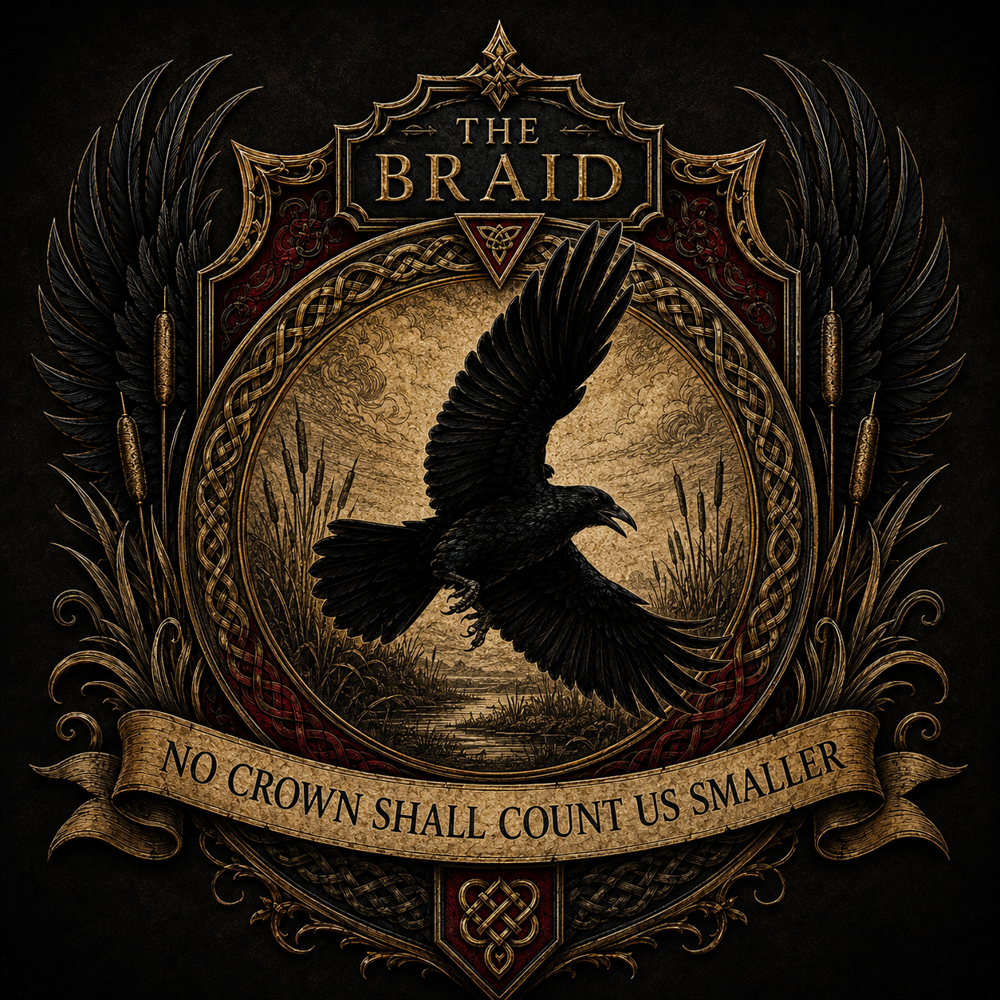
The Long Road
The Saga of Black Wings is a long-form dark epic fantasy series shaped by ravens, wolves, salt-marsh roads, old houses, buried law, chosen family and love that refuses ownership.
Books I to XV already exist within the manuscript. Work is also active across the later arc, Books XIV to XX, as those volumes are expanded, refined and carried forward into the next great movement of the story.
The introductions below are deliberately spoiler-safe. The locked doors remain locked until readers reach them.
The Reading Road
The saga grows through several great movements, but the road begins with Book I. Each volume changes the meaning of what came before, while the Braid slowly gathers its people, creatures, memories and laws.
The Complete Shelf
Each shield marks one volume of the saga. Every device is centred and contained so the full heraldry remains visible on both phone and desktop.
BOOK I
ROAD · WING · CHILD
BOOK II
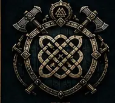
KNOT · LAW · RECKONING
BOOK III
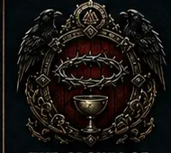
CROWN · SALT · THORNS
BOOK IV
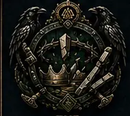
BROKEN CROWN · MARSH LAW
BOOK V
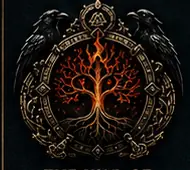
ROOT · FIRE · BLOODLINE
BOOK VI
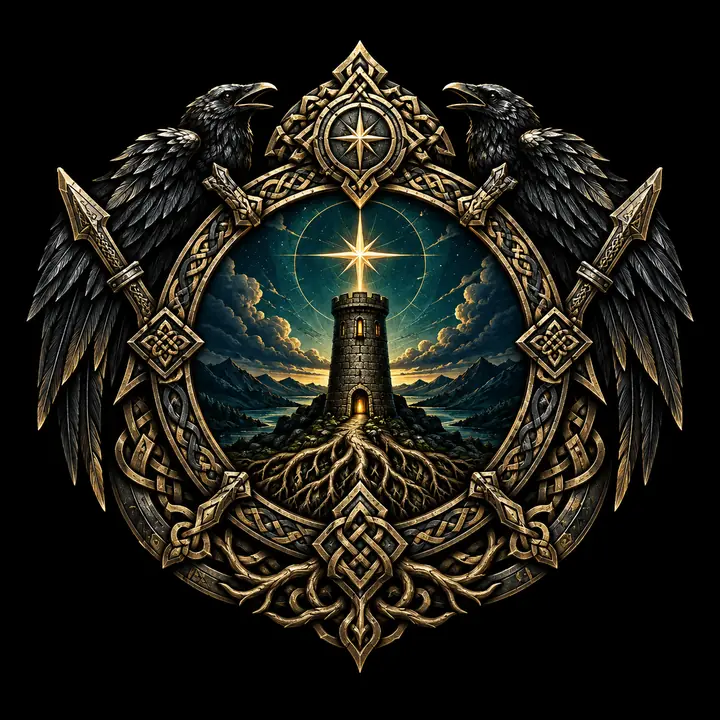
ROOT · RISE · GATE
BOOK VII
SEVER · FRACTURE · TRUTH
BOOK VIII
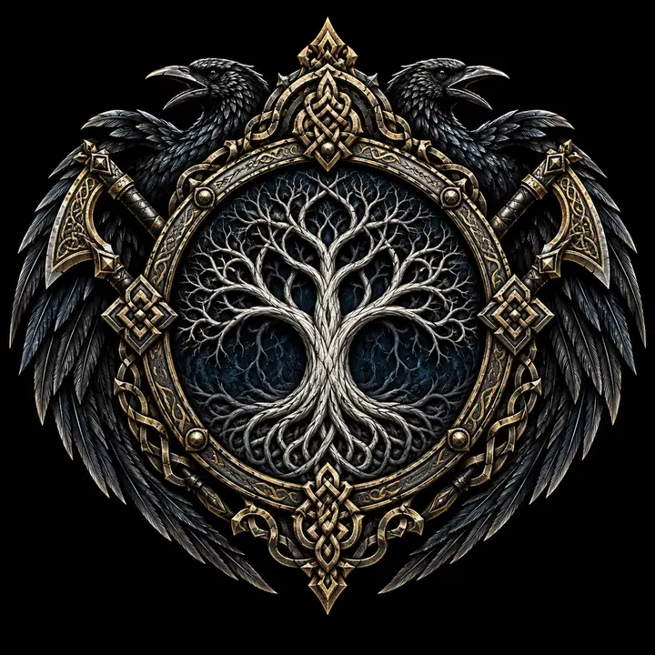
LAST ROOT · TRUE NAME
BOOK IX
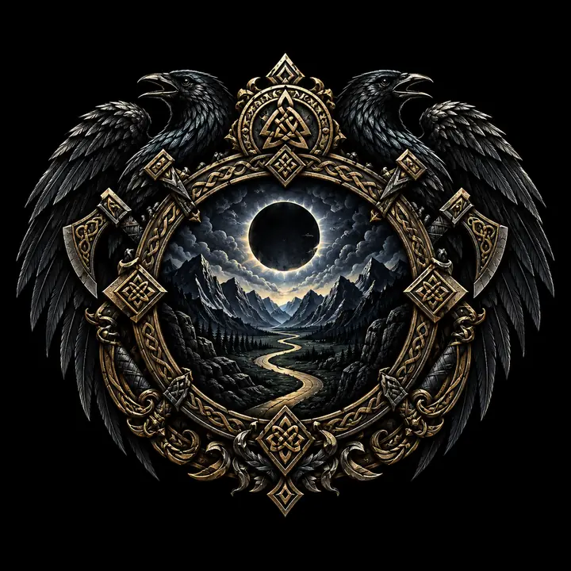
NO ROOT · WRONG TURNS
BOOK X
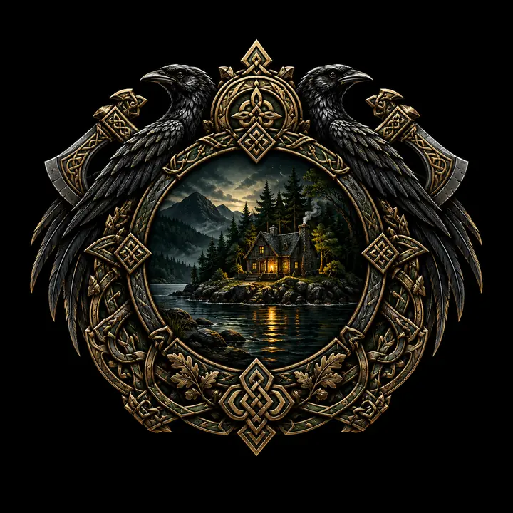
SANCTUARY · HEARTH · ISLE
BOOK XI
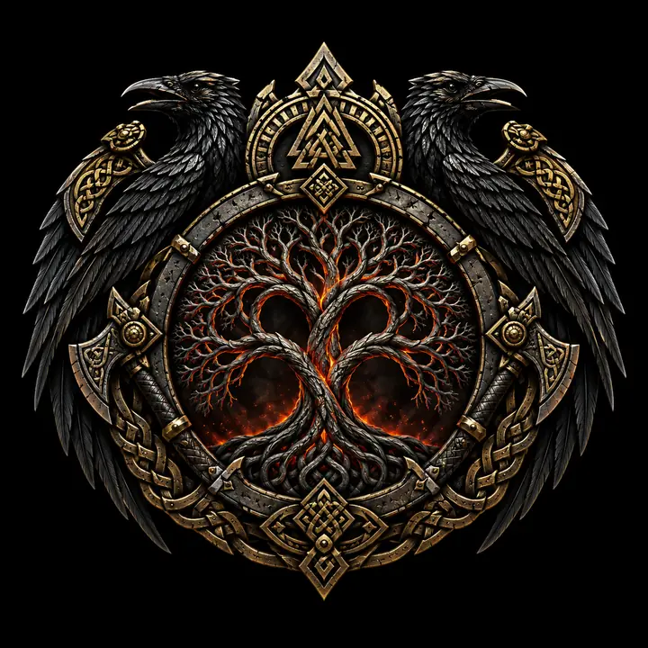
ASH · AGREEMENT · MERCY
BOOK XII
REFUSAL · CHILD · ROAD
BOOK XIII
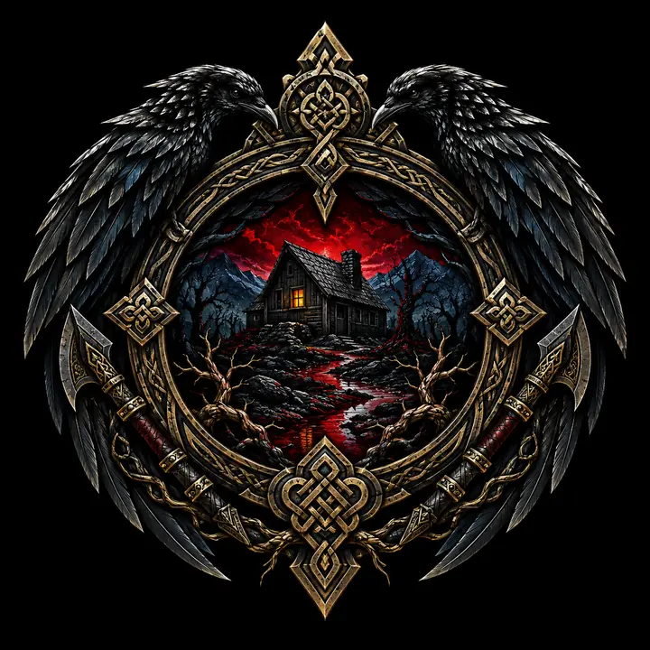
HOME · WOUND · RAVEN
BOOK XIV
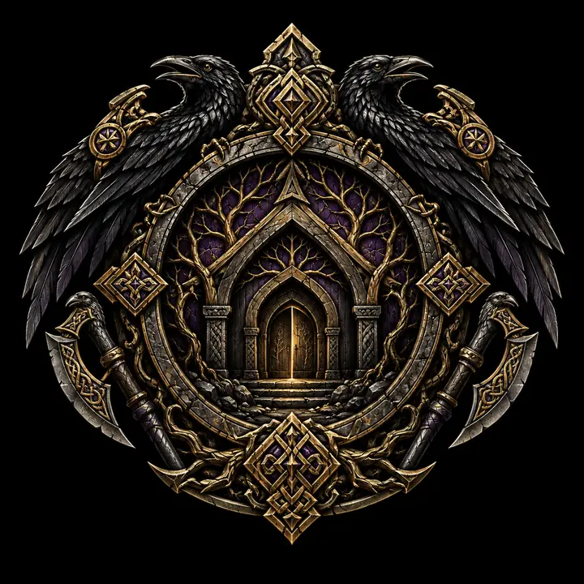
HIDDEN HOUSE · TRUTH · BLOODLINE
BOOK XV
BRAID · OATH · ALL WHO STAND BESIDE
BOOK XVI
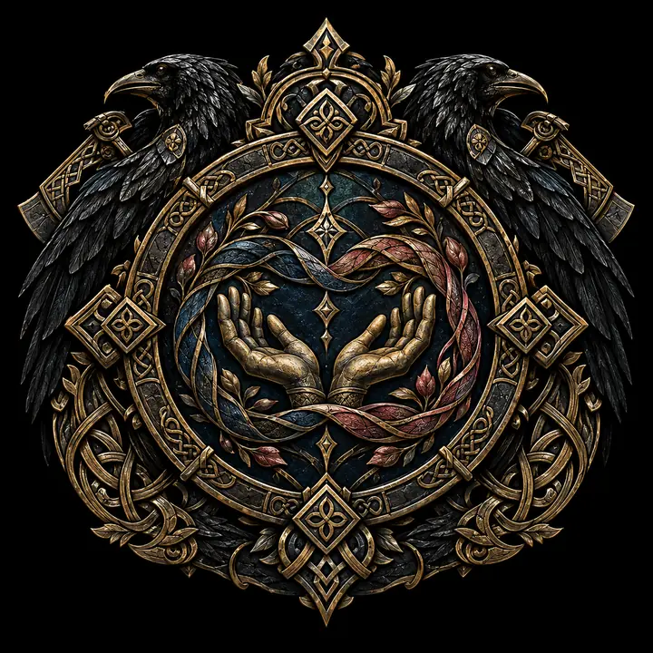
LOVE · CHOICE · NO COUNTING
BOOK XVII
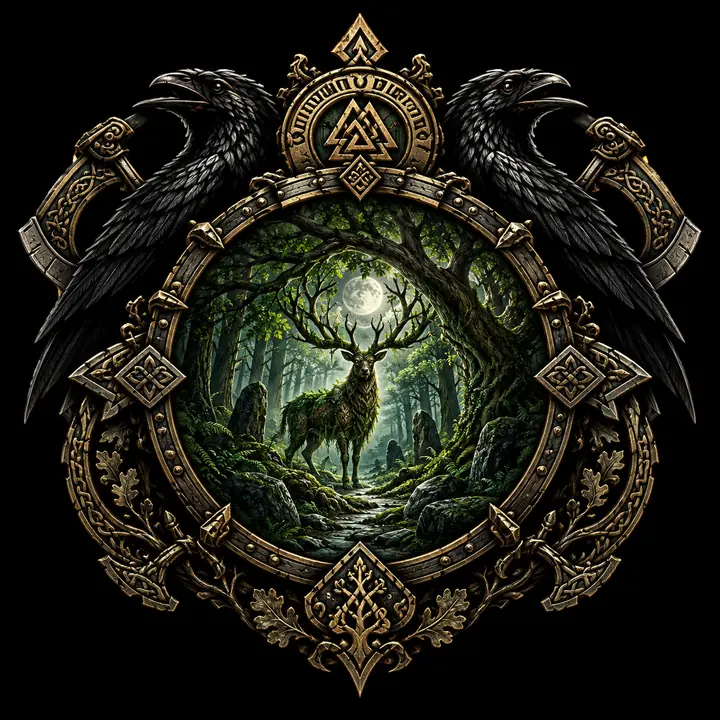
WOOD · GUARDIAN · HIDDEN PATH
BOOK XVIII
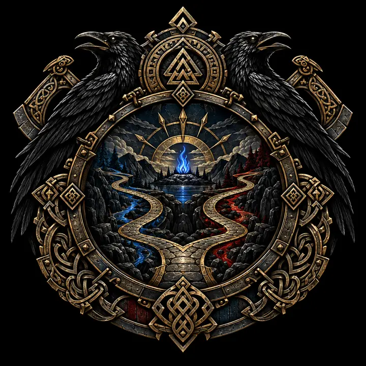
TWO ROADS · ANSWER · RETURN
BOOK XIX
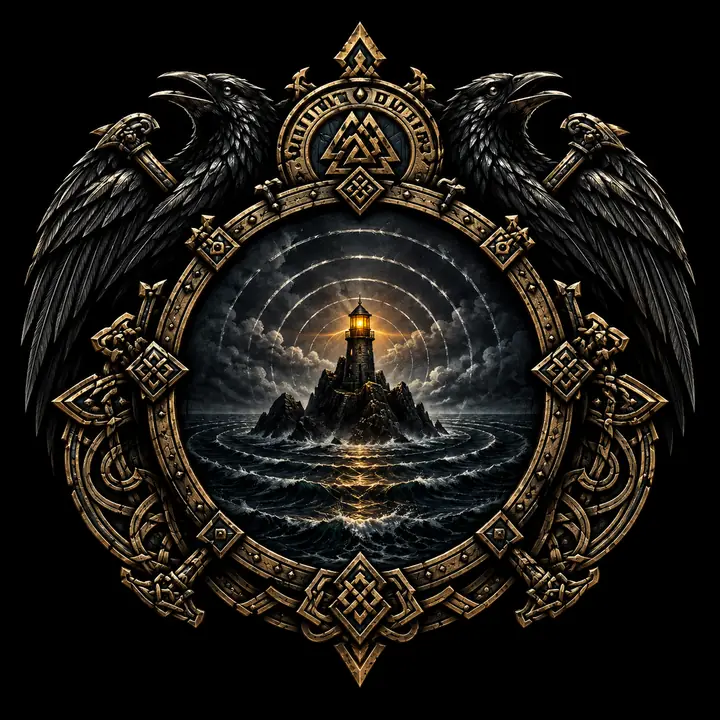
WITNESS · ISLE · LAST LIGHT
BOOK XX
HOME · JOINING · DAWN
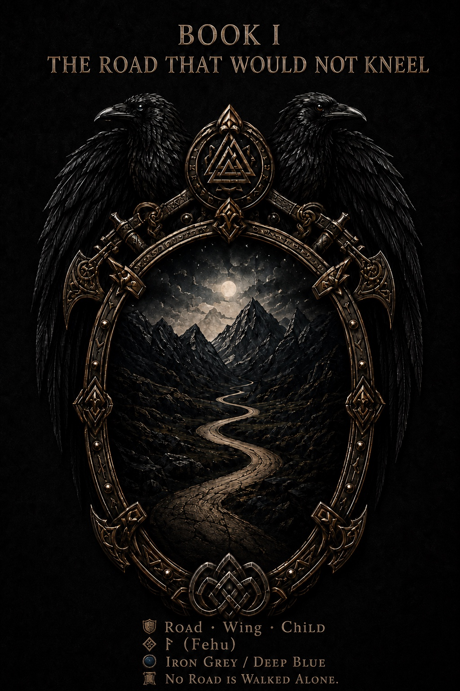
Book I · The Saga Begins
The first road opens beneath black wings. Wounded lives begin to gather, old powers take notice, and a family starts forming where no crown intended one.
This public introduction remains deliberately spoiler-safe. It names the road, but leaves its locked doors inside the book.
“Every road remembers. Every oath has a price.”
Books I to IV
Book I
The first road opens beneath black wings. Wounded lives begin to gather, old powers take notice and a family starts forming where no crown intended one.
The road refuses the knee
Book II
Debt, law and witness tighten around the living. The cost of being counted by hostile hands becomes impossible to ignore.
The knot tightens
Book III
Crown pressure deepens across road, house and family. Power learns to hide inside procedure, silence and fear.
The Crown closes in
Book IV
Old truths begin breaking through the foundations of power as living refusal answers the Crown.
The first breaking
Books V to VIII
Book V
Something ancient stirs beneath the known world. Roots carry memory, hunger and laws that were never properly buried.
The buried war
Book VI
The buried conflict rises into open ground. Those above must decide what they will protect, surrender or become.
The root rises
Book VII
Bonds, roads and loyalties are cut apart. Survival demands choices that cannot be made cleanly.
The severing
Book VIII
The oldest root reaches its final reckoning. What remains must learn how to live without the world it once depended upon.
The last root
Books IX to XII
Book IX
Victory leaves an unfamiliar silence. The survivors must discover whether freedom can endure after the force holding the world together is gone.
After the root
Book X
Peace arrives unevenly. Beneath its surface, old wounds, hidden bargains and unspoken names continue to move.
The uneasy peace
Book XI
New promises are written over old ruin. Every agreement carries memory, and every peace has someone watching its edges.
The ash agreement
Book XII
One final demand reaches the people who have already surrendered too much. Their answer changes what refusal can mean.
The living no
Books XIII to XV
Book XIII
A house becomes witness, shelter and inheritance. The past returns through rooms that remember every name once spoken inside them.
The remembering house
Book XIV
Beyond the familiar hearth lies another threshold. The family must cross it without allowing the road to decide who they are.
The farther threshold
Book XV
The scattered strands gather. Love, friendship, witness and survival become a living bond that no crown can own or measure.
“No crown shall count us smaller.”
The living Braid
The Next Roads
The next movement carries the Braid into deeper love, stranger folklore, living forest law, old-road guilt and dangers rooted far beyond the Crown. Their titles may now be spoken, while their deepest truths remain safely behind the spoiler seal.
Book XVI
The living Braid grows through love, disaster, reunion and the stubborn work of remaining beside one another.
The loves that would not be counted.
In active expansion
Book XVII
A forest keeper arrives with a great bear and knowledge of roots that should have remained silent.
The forest road opens
Book XVIII
An old road answers again, carrying memory, consequence and return toward those who once believed the question settled.
The road answers
Book XIX
A final light keeps watch where sea, memory and witness meet. What it reveals remains behind the spoiler seal.
The last witness-light
Book XX
The farthest road turns toward home, gathering every surviving strand without surrendering the cost of the journey.
The homeward road
What Lives Inside the Saga
“The story does not ask who was born important. It asks who remained when remaining became difficult.”
Continue Exploring
Meet the people, animals, houses and old laws moving through the books.